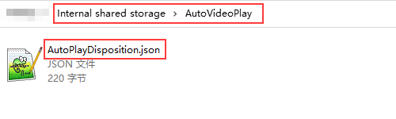

视频播放配置
本指南介绍了如何配置 AutoPlayDisposition.json 文件以控制视频播放行为。
01
配置参数
| 键 (Key) | 类型 | 取值 / 说明 |
|---|---|---|
| isAutoPlay | Integer | 1: 启用自动播放。 0: 禁用。 |
| videoPath | String | 视频的绝对路径 (例如："/sdcard/demo.mp4")。 |
| videoModel | Integer | 播放模式： 0: 平面 2D 1: 平面 3D 左右 (SBS) 4: 平面 3D 上下 (TAB)。 16: 全景 360 2D 17: 全景 360 左右 20: 全景 360 上下。 32: 半球 180 2D 33: 半球 180 左右 36: 半球 180 上下。 64: 鱼眼 2D 65: 鱼眼 3D 左右 68: 鱼眼 3D 上下。 128: EAC 2D 129: EAC 左右 1024: 立方体贴图 (Cubemap)。 |
| isSteadyOn | Integer | 1: 屏幕常亮。 0: 摘下头显时关闭屏幕。 |
| sleepTimes | Integer | 熄屏后触发“从头开始播放”所需的秒数。 |
| lockView | Boolean | true: 画面跟随头部运动。 false: 画面固定在空间中。 |
| distance | Integer | 屏幕距离 (-120 到 200)。仅对播放模式 (0, 1, 4) 生效。 |
| isStartBeginning | Integer | 1: 总是从头开始播放。 0: 从上次停止的位置续播。 |
| showUI | Integer | 1: 显示播放菜单/界面。 0: 隐藏界面。 |
02
JSON 示例
以下是 AutoPlayDisposition.json 的标准配置示例：
{
"isAutoPlay": 1,
"videoPath": "/sdcard/demo.mp4",
"videoModel": 16,
"isSteadyOn": 0,
"sleepTimes": 10,
"lockView": false,
"distance": 0,
"isStartBeginning": 1,
"showUI": 0
}
03
导入包含 JSON 文件的 AutoVideoPlay 文件夹
将 AutoPlayDisposition.json 文件放置在设备根目录下的 AutoVideoPlay 文件夹中（如果不存在则手动创建）。播放器将在启动时读取此配置。
